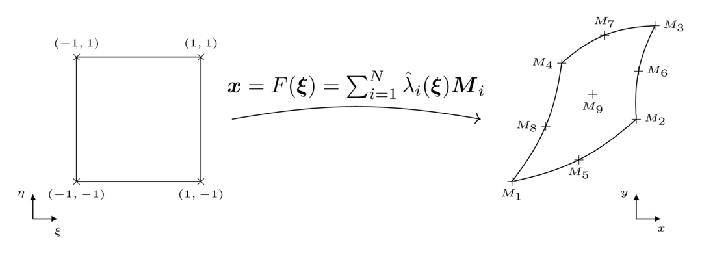

Geometry and mesh
A Mesh is a set basically of nodes (Node), a set of entities (the mesh elements) and a list of connectivies that link the entities between themselves and with the nodes.
In Bcube every mesh entity has corresponding reference Shape, a simplified or canonical representation of this element. A 1D line is mapped on the $[-1,1]$ segment, and a rectangle is mapped on the $[-1,1] \times [-1,1]$ square for instance. On these reference shapes, (almost) everything is known : the vertices location, the area, the quadrature points... Hence in Bcube we always compute things in the reference shape. For "Lagrange" elements (such as Bar*_t, Tri*_t, Quad*_t, Tetra*_t, Hexa*_t, Penta*_t etc), the mapping from the reference shape to a geometrical element is directly obtained from the corresponding Lagrange polynomials and the element node coordinates. Given a geometrical element with n nodes M_i, the mapping reads:
\[F(\xi) = \sum_{i=1}^n \hat{\lambda}_i(\xi)M_i\]
where $(\lambda)_i$ are the Lagrange polynomials whose order matches the element order.

Furthermore, an AbstractDomain is a subset of entities of the mesh. For instance, a CellDomain is a set of cells of the mesh, while InteriorFaceDomain and BoundaryFaceDomainare set of interior and boundary faces, respectively. This notion is a particular importance for integration and hence the definition of (bi)linear forms.
Mesh generators
Bcube contains several helpers to build very simple mesh such as a line, a rectangle, a circle etc. The list of available mesh generators is available here.
Reading a mesh
To read a mesh from a file, use the read_mesh function from the IO interface. However, there is no reader in the core of Bcube : there are implemented in companion packages.
For now, Bcube supports GMSH format (.msh) through the BcubeGmsh.jl package, and there is also partial support of the CGNS file format through the BcubeCCGNS.jl package.
julia> mesh = read_mesh("mesh.msh")